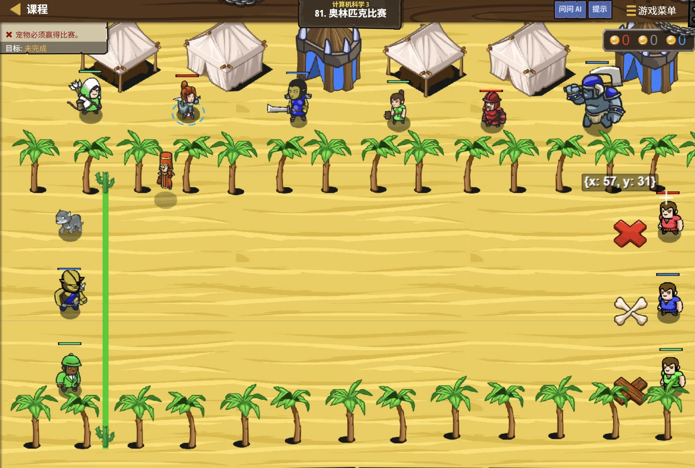

故事：绿洲要办一场比赛，裁判拿着计时器站在场边。
听到 Start 就出发，碰到标记再跑回来，快的人赢。
塞尼克提醒你：注意，裁判说的话、说话的时机，都是有讲究的——
得判断清楚谁在说、说的是什么，才能做出正确反应。
扣哒考级 · GESP PYTHON 五级 · 第 3 单元 | 星砂绿洲 STARDUST OASIS
巨钟计数师 大整数与高精度应用
Big Integers & Arbitrary Precision

塞尼克
沙海向导 · 你的向导
绿洲中央立着一口巨钟，看守人说：它每分钟敲一下，
一直敲到第 2 的 200 次方下才停。
你在心里算了算——那是个天文数字，普通计算器根本显示不出来。
塞尼克敲了敲钟壁：可 Python 不在乎。你给它多大的数，它就算多大的数， 一位都不会丢。
你在心里算了算——那是个天文数字，普通计算器根本显示不出来。
塞尼克敲了敲钟壁：可 Python 不在乎。你给它多大的数，它就算多大的数， 一位都不会丢。
塞尼克 · 沙海向导
在别的语言里，"整数能表示多大"是有上限的，超了就溢出。但 Python 的整数是"任意精度"的——只要内存够，多大都行。
这给我们省了很多事，但也要学会应对大数带来的新问题。
assets/illustrations/py-L5-03-01_giant_bell.webp
【配图位】绿洲中央的青铜巨钟悬在石架上，钟身刻满层层叠叠的数字与进位符号；一名看守人手持记录板站在钟下，钟摆投下的影子里隐约可见"2 的 200 次方"的刻痕。
0 单元导语与目标
Unit Overview
0.1 学习目标
1学完这个单元，你将能……
- 说清"溢出"是什么意思
- 知道 Python 整数为什么不会溢出
- 计算阶乘、幂等会产生巨大结果的问题
- 求一个大数的位数、个位数、各位数字之和
- 说出"竖式加法"的程序实现思路
- 判断什么情况下真的需要高精度运算
0.2 考纲对照
2对标 GESP 考纲（Python 五级）
- 了解大整数的概念与 Python 任意精度整数的特性
- 掌握大数的基本运算：加减乘、取位数、取各位数字
- 了解高精度运算的竖式思想（数组模拟）
- 考核目标：能编写处理大整数的程序并正确输出结果
1 整数会"溢出"吗
Integer Overflow
1.1 定长整数的天花板
先看一个"别的语言常见、Python 不会发生"的问题：
32 位整数的经典事故
别的语言
// 假设一个 32 位有符号整数，最大只能存到 2147483647
int x = 2147483647;
x = x + 1; // 结果变成 -2147483648（溢出！）原因 位数是有限的，加到顶就"翻"回负数去了——正是三级学过的补码溢出
1.2 Python 为什么不怕
Python：想多大就多大
Python
x = 2147483647
print(x + 1) # 2147483648，一切正常
print(2 ** 100) # 1267650600228229401496703205376
print(1000 ** 3) # 1000000000
print(99999999999999 * 99999999999999) # 完全不会出错结论 Python 的 int 会自动"变长"，只要内存够，多大都行
为什么 Python 能做到？
它把大整数拆成很多个"小段"分别存放，需要更多位时就自动加段——
这其实就是高精度运算的思想，只不过 Python 已经帮你在底层实现了。
所以你在 Python 里写大数运算，几乎不用操心。
这其实就是高精度运算的思想，只不过 Python 已经帮你在底层实现了。
所以你在 Python 里写大数运算，几乎不用操心。
2 Python 的大整数
Big Integers in Python
2.1 想有多大就有多大
图 2（SVG）：大数运算在 Python 里就是普通运算
assets/illustrations/py-L5-03-02_big_pyramid.webp
【配图位】星砂绿洲的巨钟旁堆着一座发光的高塔：塔身由一层层石块叠成，每往上一层，块数都比下一层多，塔尖已经高到看不清；一名学徒仰头数着塔层，手里的册子上写着"20! = 2432902008176640000"。
2.2 阶乘与幂：增长最快的两种运算
阶乘与幂：两个"增长最快"的运算
Python
# 求 20 的阶乘
f = 1
for i in range(1, 21):
f = f * i
print(f) # 2432902008176640000
# 求 2 的 64 次方
print(2 ** 64) # 18446744073709551616
# 注意：最好不要用 math.factorial 之外的库，考试里手写循环更保险
要点 阶乘和幂增长极快，20! 就已经有 19 位了
3 大数的位数与首尾
Digits & Edges
3.1 四个常用操作
数字一大，"位数"本身就成了问题。还好 Python 提供了很方便的工具：
四个常用操作
Python
n = 2 ** 100
# ① 转成字符串，位数一目了然
s = str(n)
print(len(s)) # 31 位
# ② 个位数：对 10 取余
print(n % 10) # 6
# ③ 各位数字之和
total = 0
for ch in s:
total = total + int(ch)
print(total) # 各位相加的结果
# ④ 末尾有多少个 0
print(len(s) - len(s.rstrip("0")))实用技巧 大数问题里，"转字符串"往往比"纯数学"更方便
3.2 转成字符串，像处理文本一样处理它
一条很好用的思路：
遇到"求各位数字之和""判断是不是回文数""数一数某个数字出现几次"这类题目，
最省事的办法就是
这比用 % 和 // 一位一位拆，写起来快得多。
最省事的办法就是
str(n) 转成字符串，然后像处理字符串一样处理它。这比用 % 和 // 一位一位拆，写起来快得多。
4 高精度的竖式思想
The Vertical Form Idea
4.1 竖式的三个要点
如果哪天要自己实现"大数加法"（比如在不能自动扩展的语言里）， 就要用上我们小学学的竖式：
图 4（SVG）：竖式加法的三个要点——逐位、进位、最高位补位
assets/illustrations/py-L5-03-03_abacus_columns.webp
【配图位】巨钟下方的石台上摆着一排格子，每格放一颗刻着数字的石珠：最左边那格是个位，往右依次是十位、百位、千位；一名学徒正把两个数逐格对齐、从最左边开始加，格与格之间有一条细小的进位渠把满十的那一颗送往右边。
用列表模拟竖式加法（理解思路即可）
Python
# 把两个数按"低位在前"存进列表
A = [7, 8, 9] # 表示 987
B = [4, 5, 6] # 表示 654
res = []
carry = 0 # 进位
i = 0
while i < len(A) or i < len(B) or carry:
da = A[i] if i < len(A) else 0
db = B[i] if i < len(B) else 0
s = da + db + carry
res.append(s % 10) # 这一位写几
carry = s // 10 # 进位是多少
i = i + 1
# res 是低位在前，倒过来才是正常的数
res.reverse()
print("".join(str(x) for x in res)) # 1641OUTPUT 1641
4.2 为什么要"低位在前"
为什么"低位在前"？
因为加法是从个位开始的，而多出来的进位要往后（更高位）放。
把低位放在列表前面，处理起来最自然——这也是数组模拟高精度的通用约定。
把低位放在列表前面，处理起来最自然——这也是数组模拟高精度的通用约定。
5 代码实战
Level Practice
关卡
奥林匹克比赛
进入关卡 →思路：监听事件、判断发言人与内容，再做出对应动作。

assets/stages/py-L5-03-stage1_olympic.webp
【关卡截图位】请把《奥林匹克比赛》的游戏画面截图放到此处（放入 assets/stages/ 目录，文件名为 py-L5-03-stage1_olympic.webp）。
重点示例：判断发言人 + 判断内容
Python
def onHear(event):
referee = pet.findNearestByType("wizard")
# 只有"裁判说 Start"时才开始跑
if event.speaker == referee and event.message == "Start":
pet.moveXY(红色标记的坐标)
pet.moveXY(队伍标记的坐标)要点 两个条件用
and 连接：既要"是裁判说的"，又要"说的是 Start"
和本单元的关联：
大数题目里经常要判断"这个数有多少位""某一位是不是 0""有没有进位"，
这些其实都是"多条件同时成立"的判断——和这一关里
去扣哒世界闯这一关 →
这些其实都是"多条件同时成立"的判断——和这一关里
speaker == referee and message == "Start" 是同一套写法。
6 常见陷阱
Common Pitfalls

扣哒鸭 · 调试官
大数的题看起来吓人，其实错的地方很固定。四条，看完就不慌了。
1
用
math.pow 或浮点运算算大整数，结果不准了。
扣哒鸭：
算整数幂一定要用
math.pow 返回的是浮点数，位数一多就会变成
1.26e+30 这种近似值，丢精度。算整数幂一定要用
** 或 pow(a, b)，不要用 math.pow。正确写法：
2 ** 100 或 pow(2, 100)2
用
/ 做除法，结果带小数。
扣哒鸭：
整数运算要用
/ 永远返回浮点数，哪怕整除也一样。整数运算要用
//，取余用 %。正确写法：整除用
//3
想把大数一位一位取出来，却用错了取位方式。

扣哒鸭：两种办法都行：
① 数学法：
② 字符串法：
做题优先用字符串法，又快又不容易错。
① 数学法：
n % 10 取个位，n //= 10 去掉个位，循环；② 字符串法：
str(n) 之后直接遍历每个字符。做题优先用字符串法，又快又不容易错。
推荐做法：
for ch in str(n): ...4
以为"数字大就一定需要高精度算法"。

扣哒鸭：在 Python 里，大整数直接用就行，
不需要自己写竖式。
学习竖式的意义在于理解原理——万一遇到不支持大数的语言，你才知道怎么自己实现。
学习竖式的意义在于理解原理——万一遇到不支持大数的语言，你才知道怎么自己实现。
正确认识：Python 直接算；竖式方案是为了理解原理
7 题目练习
Practice
第 1 题改编自 2026 年 9 月 · Python 五级 第 15 题，其余为原创练习题。
改编自 2026 年 9 月 · Python 五级 · 第 15 题单选题
绿洲的账本要把两个"超大整数"做加法。数组 a 和 b 按低位在前存放两个非负大整数，下面的函数实现高精度加法，横线处应填写（ ）。
1 def add(a, b): 2 c = [] 3 carry = 0 4 n = max(len(a), len(b)) 5 for i in range(n): 6 sum_val = carry 7 if i < len(a): 8 sum_val += a[i] 9 if i < len(b): 10 sum_val += b[i] 11 c.append(sum_val % 10) 12 _______________ 13 if carry != 0: 14 c.append(carry) 15 return c
A.carry = sum_val % 10
B.carry = sum_val
C.carry = sum_val // 10
D.carry = c[i] // 10
B.carry = sum_val
C.carry = sum_val // 10
D.carry = c[i] // 10
查看答案与详解
答案：C。竖式加法的规矩是：本位留下个位、进位交给下一位。
第 11 行
A 错：又取了一次个位，进位永远是 0~9，加法结果会错；
B 错：把整个和当进位，下一位会凭空多出好几倍；
D 错：
记住高精度的口诀：低位在前、逐位相加、取个位留下、取十位进位。最后如果还有进位，要在末尾再补一位。
对应小节4 高精度的竖式思想。
第 11 行
c.append(sum_val % 10) 已经把个位存进了这一位，所以第 12 行要算的是十位以上，也就是 sum_val // 10 —— 这正是"进位"。A 错：又取了一次个位，进位永远是 0~9，加法结果会错；
B 错：把整个和当进位，下一位会凭空多出好几倍；
D 错：
c[i] 是刚存进去的个位数字，它除以 10 一定是 0，进位永远传不下去。记住高精度的口诀：低位在前、逐位相加、取个位留下、取十位进位。最后如果还有进位，要在末尾再补一位。
对应小节4 高精度的竖式思想。
原创练习题单选题
下列 Python 代码执行后，输出的结果是（ ）。
1 print(2 ** 10) 2 print(len(str(2 ** 10)))
A.1024 和 4 B.1024 和 3 C.20 和 2 D.报错
查看答案与详解
答案：A。
要点：求位数最方便的办法就是
对应小节3 大数的位数与首尾。
2 ** 10 = 1024，
转成字符串 "1024" 长度是 4。要点：求位数最方便的办法就是
len(str(n))。对应小节3 大数的位数与首尾。
原创练习题单选题
在 Python 中，
10 ** 20 的结果是（ ）。
A.溢出报错 B.一个精确的整数 100000000000000000000
C.1e+20 D.0
C.1e+20 D.0
查看答案与详解
答案：B。Python 的整数是任意精度的，
对比：C 项的
对应小节1 整数会"溢出"吗；2 Python 的大整数。
**
运算会给出精确的整数结果，不会变成科学计数法。对比：C 项的
1e+20 是浮点数，
如果用 10.0 ** 20 才会得到近似值。对应小节1 整数会"溢出"吗；2 Python 的大整数。
原创练习题判断题
在 Python 中，
math.pow(2, 10) 和
2 ** 10 的结果完全相同，都是精确的整数。（ ）查看答案与详解
答案：错误（×）。
而
记牢：算整数幂用
对应小节6 常见陷阱。
math.pow() 返回的是
浮点数（结果是 1024.0），位数一多就会丢精度；而
2 ** 10 得到的是整数 1024。记牢：算整数幂用
** 或 pow(a, b)，不要用 math.pow。对应小节6 常见陷阱。
原创练习题单选题
下列 Python 代码执行后，输出的结果是（ ）。
1 n = 12345 2 s = 0 3 for ch in str(n): 4 s = s + int(ch) 5 print(s)
A.15 B.12345 C.5 D.10
查看答案与详解
答案：A。把 12345 转成字符串后逐位取出，转回数字累加：
1 + 2 + 3 + 4 + 5 = 15。
要点：求"各位数字之和"的经典写法就是"转字符串 → 遍历 → int 转回 → 累加"。
对应小节3 大数的位数与首尾。
要点：求"各位数字之和"的经典写法就是"转字符串 → 遍历 → int 转回 → 累加"。
对应小节3 大数的位数与首尾。
原创练习题单选题
下列 Python 代码执行后，输出的结果是（ ）。
1 f = 1 2 for i in range(1, 6): 3 f = f * i 4 print(f)
A.15 B.120 C.720 D.5
查看答案与详解
答案：B。
易错点：C 项 720 是 6 的阶乘，需要写成
对应小节2 Python 的大整数。
range(1, 6) 取 1、2、3、4、5，
所以算的是 5! = 1×2×3×4×5 = 120。易错点：C 项 720 是 6 的阶乘，需要写成
range(1, 7)。对应小节2 Python 的大整数。
原创练习题判断题
用列表模拟高精度加法时，通常把数字的"低位"放在列表的前面。（ ）
查看答案与详解
答案：正确（√）。因为加法是从个位开始的，
而进位要往更高位传——
把低位放在前面，进位就是"往后追加"，处理起来最自然。
最后输出时记得把结果倒过来。
对应小节4 高精度的竖式思想。
把低位放在前面，进位就是"往后追加"，处理起来最自然。
最后输出时记得把结果倒过来。
对应小节4 高精度的竖式思想。
原创练习题编程题
题目要求：计算 2 的 100 次方，并输出：① 这个数一共有多少位；
② 它的个位数字；③ 它的各位数字之和。
查看参考答案与要点
n = 2 ** 100
s = str(n)
print("位数：", len(s)) # ① 31
print("个位：", n % 10) # ② 6
total = 0 # ③
for ch in s:
total = total + int(ch)
print("各位之和：", total)
输出：位数 31、个位 6、各位数字之和 115
要点：
① 求位数用 len(str(n))，比循环除以 10 快得多；
② 个位数直接用 n % 10；
③ 各位求和用字符串遍历；
④ 2 的 100 次方是 1267650600228229401496703205376，一共 31 位。
对应小节3 大数的位数与首尾。
8 本单元小结
Unit Summary
塞尼克 · 沙海向导
三句话记住大整数：一、Python 的整数想多大就多大，不用怕溢出。
二、算整数幂用 **，千万别用 math.pow（那是浮点）。
三、处理各位数字，优先转字符串再遍历，简单又稳。
竖式那套思路了解一下就好——它更多是为了让你理解"电脑怎么算大数"。
你在巨钟下收获了什么
- 整数溢出——固定位数的整数加到顶会"翻回负数"，就是补码溢出。
- Python 的优势——int 是任意精度的，只要内存够，多大都能算。
- 整数幂——用
**或pow(a,b)，不要用math.pow。 - 求位数——
len(str(n))是最省事的办法。 - 取个位与各位和——
n % 10取个位；for ch in str(n)求各位和。 - 竖式思想——逐位相加 + 进位处理，低位在前存进列表。
- 选择原则——Python 直接算；理解竖式是为了应对不支持大数的场合。